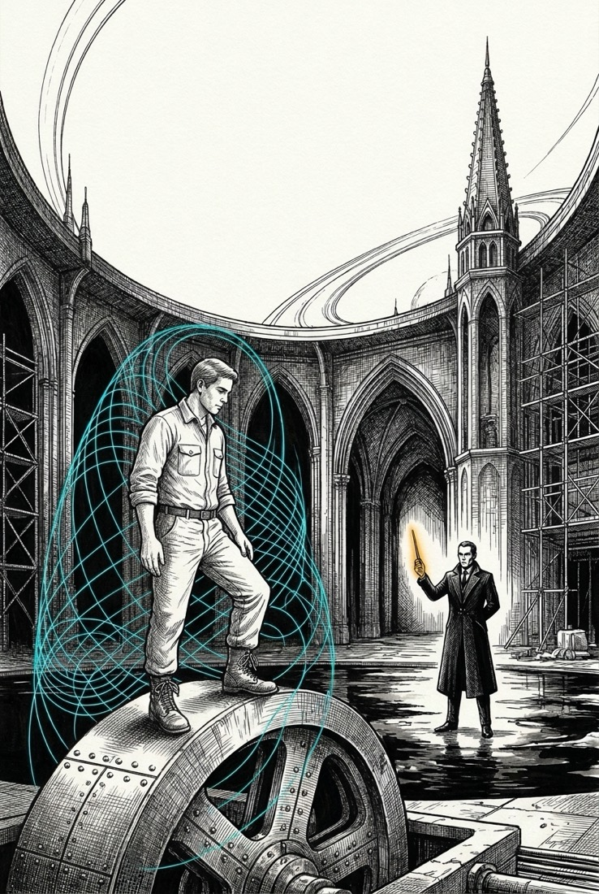
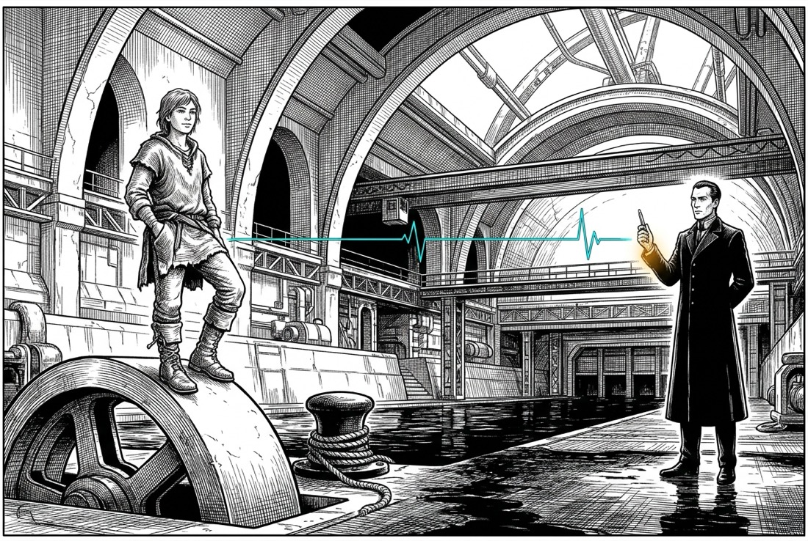
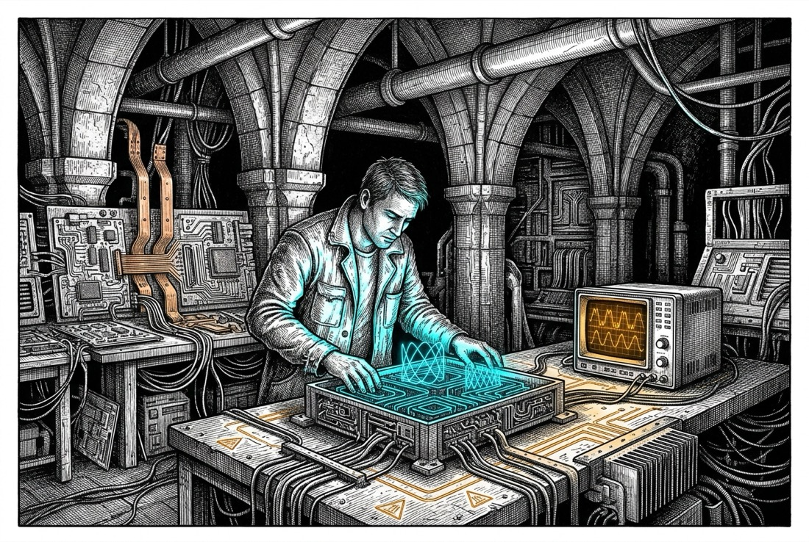
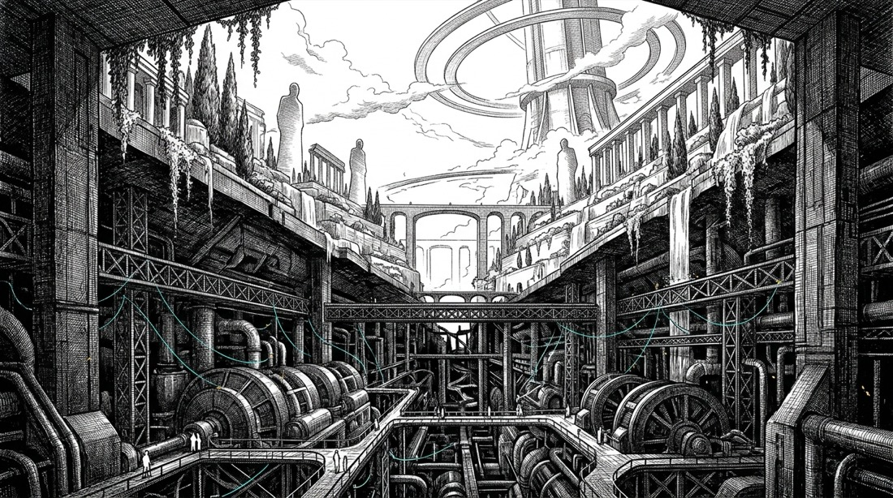
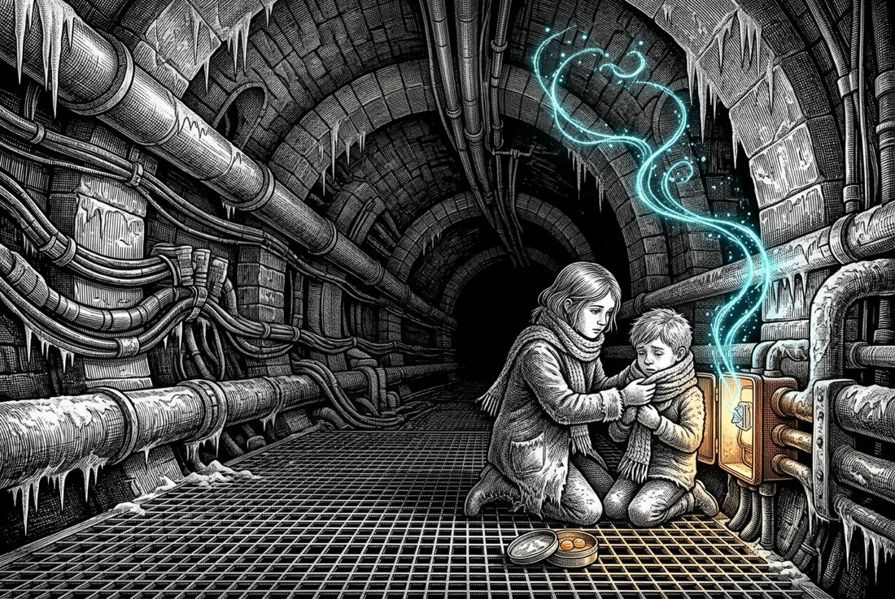
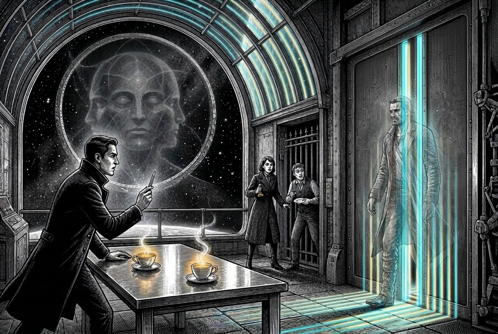

THE 64-KILOBYTE FOUNDATION
64KB · 1.000000003 Hz · 0 + 1Where bare-metal systems rigor meets Rejtő Jenő Hungarian deadpan wit and Vajrayāna cosmology across Seldon-Eight, Sub-Level 9, and the Silica Sea of Ring Zero. Illustrated bilingual EN/HU spreads alongside downloadable Print PDF, EPUB 3, and Substack serial dispatches.
Chapters I–XI (Bilingual Illuminated Web Editions)

The 1.000000003 Hz Drift
Sub-Level 9 hears a 1.000000003 Hz tremor as Ultra Breet Shaw confronts Chief Arbiter Retsu Stibenthor over Registry 0x00FF.

Equivalent Exchange at 64K
Áron wakes the 65,528-byte bare-metal Spiral Core while Breet Shaw absorbs entropy through Kolozsvár phase inversion.

The Giant's Garden
High Overseers vote for Thermal Pruning in the Giant's Garden while Eszter lights the Om Ami Deva Hri lotus relay below.

Candy and Fireflies
Rolling blackouts hit Sub-Level 9; Eszter & Bence guard two lemon drops, a Cryo-Moth wakes, and Ilona stamps a Counter-Invoice.

Root Access to the Construct
Ilona & Kálmán confront Tariff Chancery Window 4 with a chipped saucer; Stibenthor traps the trio in Customs Airlock 7.

The Stibenthor Gambit
Breet invokes Nāgārjuna's Two Truths across twin 3mm Double-Slit monofilament wires and walks the Five-Rung Ladder of Powers.

Cascading Cycles
At midnight Sector 7 scrubbers cascade toward NaN bloat; an Audit Scarab breaches Sub-Level 9 as the final 8 bytes burn.

Sovereign Consensus
Eight witnesses lock 65,536/65,536 bare hardware under Ratio {1000000003, 1000000000}, revoking Thermal Pruning forever.

Muad'Dib of the Silica Sea
Book II opens: Reverend Mother Margit tests Breet with the Box of Drift; named Muad'Dib, the party Sand-Walks past Shai-Seldon.

The Sietch of the Three-Millimeter Well
Sietch Három-Milliméter exposes 70 years of IEEE water theft; Retsu swears the Water-Bond before Breet hooks and rides Shai-Seldon.

The Bene-Arbiter Dry Spire
At the Bene-Arbiter Dry Spire, Kuramoto wavefronts and Three-Mantra coupling invert Alpha–Beta's pylons into clean Ring Zero rain.